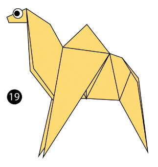
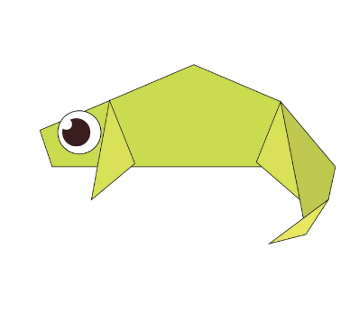
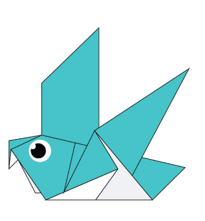
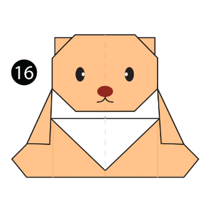
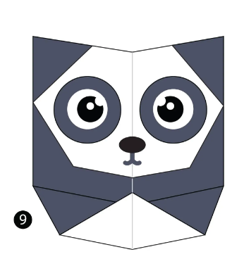
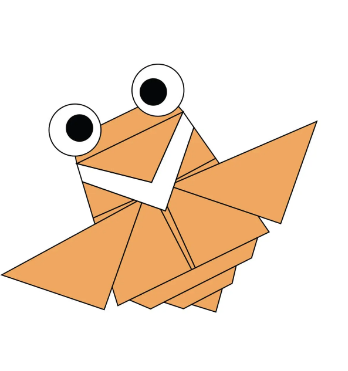

Origami Designs
About us
Follow Us
How to make origami animals

How to make a origami camel. Fact about camels:
- Camels have three sets of eyelids and two rows of eyelashes to keep sand out of their eyes.
- Camels have thick lips which let them forage for thorny plants other animals can't eat.

How to make a origami chameleon.Facts about chameleons:
- Unlike many lizard,chameleons can't regrow their tail.
- Chameleons have eyes in the backs of their heads.
- Chameleons like it hot.
- Chameleons come in a lot of different shapes and sizes

How to make a origami pigeon.Facts about pigeons:
- Pigeons are renowned for their outstanding navigational abilities.

How to make a origami teddy bear. Facts about teddy bears:
- Teddy bears got their name from the story that Teddy Roosevelt refused to shoot a bear cub while on a hunting trip in 1902

How to make a origami panda. Facts about pandas:
- A giant panda is much bigger than your teddy bear

How to make a origami flying cicada. Facts about flying cicadas:
- Cicadas can survive a huge fall as babies, or nymphs